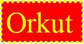

| Itens/Mês |
Janeiro | Fevereiro | Março |
| Usuarios | 80 | 93 | 120 |
| Linhas | 3 | 3 | 5 |
Exemplos de Listas
Listas Simples
Listas Numeradas
- item 1
- item 2
- item 3
Listas de Definições
- UNIVALE
- Universidade Vale do Rio Doce
- FATEC
- Faculdade de Ciências Tecnológicas
Exemplos de barras
 inicia o texto alinhado com o alto da imagem
inicia o texto alinhado com o alto da imagem
 inicia o texto alinhado com o meio da imagem
inicia o texto alinhado com o meio da imagem
 inicia o texto alinhado com o rodapé da imagem
inicia o texto alinhado com o rodapé da imagem
 coloca a imagem alinhada a direita
coloca a imagem alinhada a direita
 coloca a imagem centralizada
coloca a imagem centralizada
Exemplos de ligações entre seções
Poemas de Carlos Drumond de Andrade
Receita de Ano Novo
Mãos Dadas
E agora, José?
RECEITA DE ANO NOVO
voltar
Para você ganhar belíssimo Ano Novo
cor do arco-íris, ou da cor da sua paz,
Ano Novo sem comparação com todo o tempo já vivido
(mal vivido talvez ou sem sentido)
para você ganhar um ano
não apenas pintado de novo, remendado às carreiras,
mas novo nas sementinhas do vir-a-ser;
novo
até no coração das coisas menos percebidas
(a começar pelo seu interior)
novo, espontâneo, que de tão perfeito nem se nota,
mas com ele se come, se passeia,
se ama, se compreende, se trabalha,
você não precisa beber champanha ou qualquer outra birita,
não precisa expedir nem receber mensagens
(planta recebe mensagens?
passa telegramas?)
Não precisa
fazer lista de boas intenções
para arquivá-las na gaveta.
Não precisa chorar arrependido
pelas besteiras consumidas
nem parvamente acreditar
que por decreto de esperança
a partir de janeiro as coisas mudem
e seja tudo claridade, recompensa,
justiça entre os homens e as nações,
liberdade com cheiro e gosto de pão matinal,
direitos respeitados, começando
pelo direito augusto de viver.
Para ganhar um Ano Novo
que mereça este nome,
você, meu caro, tem de merecê-lo,
tem de fazê-lo novo, eu sei que não é fácil,
mas tente, experimente, consciente.
É dentro de você que o Ano Novo
cochila e espera desde sempre.
Mãos Dadas
voltar
Não serei o poeta de um mundo caduco.
Também não cantarei o mundo futuro.
Estou preso à vida e olho meus companheiros
Estão taciturnos mas nutrem grandes esperanças.
Entre eles, considere a enorme realidade.
O presente é tão grande, não nos afastemos.
Não nos afastemos muito, vamos de mãos dadas.
Não serei o cantor de uma mulher, de uma história.
Não direi suspiros ao anoitecer, a paisagem vista na janela.
Não distribuirei entorpecentes ou cartas de suicida.
Não fugirei para ilhas nem serei raptado por serafins.
O tempo é a minha matéria, o tempo presente, os homens presentes,
a vida presente.
E agora, José?
voltar
A festa acabou,
a luz apagou,
o povo sumiu,
a noite esfriou,
e agora, José?
e agora, Você?
Você que é sem nome,
que zomba dos outros,
Você que faz versos,
que ama, proptesta?
e agora, José?
Está sem mulher,
está sem discurso,
está sem carinho,
já não pode beber,
já não pode fumar,
cuspir já não pode,
a noite esfriou,
o dia não veio,
o bonde não veio,
o riso não veio,
não veio a utopia
e tudo acabou
e tudo fugiu
e tudo mofou,
e agora, José?
E agora, José?
sua doce palavra,
seu instante de febre,
sua gula e jejum,
sua biblioteca,
sua lavra de ouro,
seu terno de vidro,
sua incoerência,
seu ódio, - e agora?
Com a chave na mão
quer abrir a porta,
não existe porta;
quer morrer no mar,
mas o mar secou;
quer ir para Minas,
Minas não há mais.
José, e agora?
Se você gritasse,
se você gemesse,
se você tocasse,
a valsa vienense,
se você dormisse,
se você consasse,
se você morresse....
Mas você não morre,
você é duro, José!
Sozinho no escuro
qual bicho-do-mato,
sem teogonia,
sem parede nua
para se encostar,
sem cavalo preto
que fuja do galope,
você marcha, José!
José, para onde?
voltar
